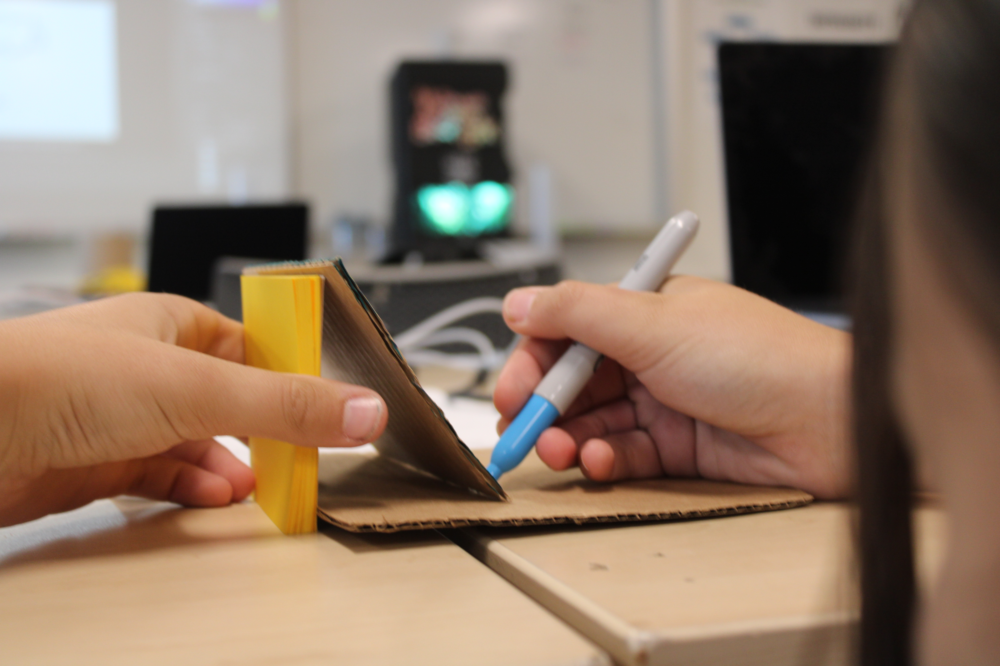
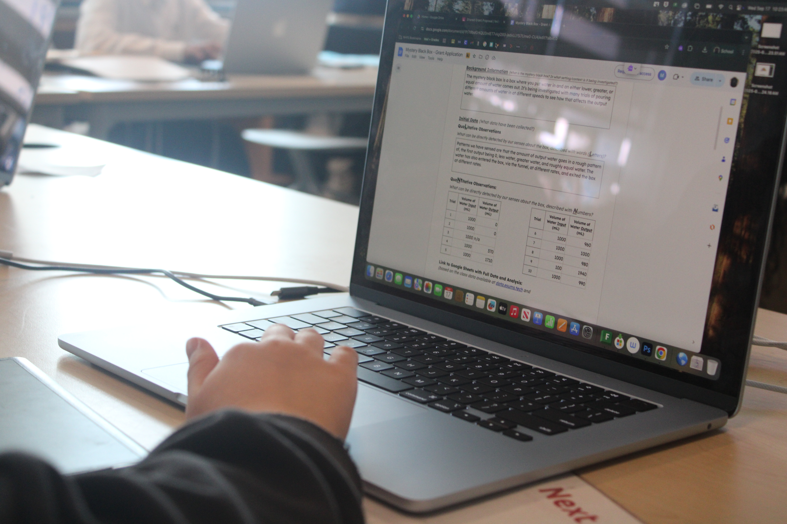
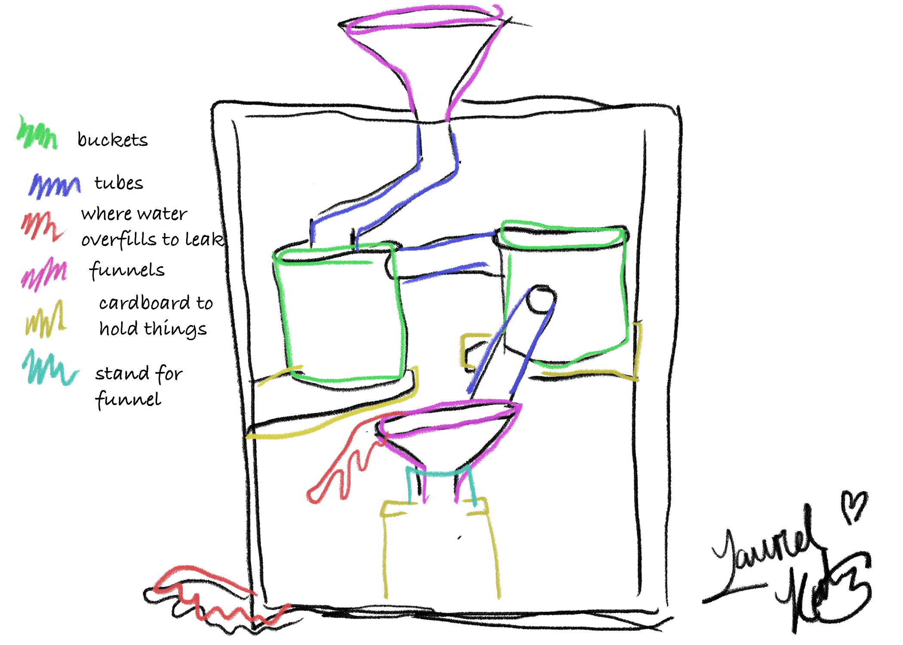
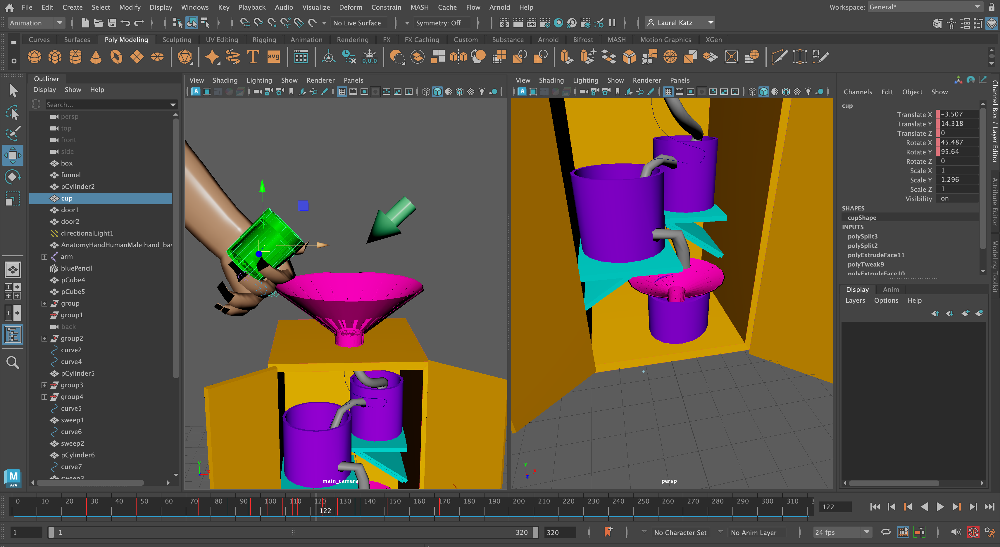

We did an investigation at ESUMS about Mr Sinusas's Myster Black Box. The mystery black box is a box that contains an unknown mechanism on the inside that changes the water output from the water input amount. The water output varies from being the same, less, and higher than the water amount we put in. We investigated it by putting in the water with different amounts and speeds. Our goal of this investigation was to figure out what’s inside.
I think that we don’t have enough evidence to firmly confirm or deny the presence of a siphon in the black box.
In the intial observations we poured water into Mr. Sinusas’s Mystery Black Box in amounts from 100 mL to 2000 mL. We observed an output that varied from 0 mL to 1940 mL. My approach was to pour in different amounts of water at different speeds. However in the initial tests of the box, there were leaks which could’ve contaminated the trials genuinity. There was only a rough pattern of a couple low outputs to a much larger output. I designed the model to be able to output varying amounts from nothing to a lot. Our groups model was built to be able to hold water and output nothing, and to be able to output lots of water out of no where. We built in siphons, which functions is to hold water until there’s enough for a massive transport to another bucket. We tested our model with varying amounts from 100 to 230. The results were all 0 mL. This is due to massive leaks.
The data shown is the data we were able to get before the major leaks contaminated all the data.
| Trials | Input Water | Output Water |
|---|---|---|
| 5 | 100 | 0 |
| 6 | 110 | 0 |
| 7 | 100 | 0 |
| 8 | 100 | 0 |
| 9 | 100 | 0 |
| 10 | 100 | 0 |
A model is a prototype. It’s a simpler version of the final product. It’s typically used to test if the product is meeting its conditions. A model’s strengths are being able to test how a product will work but in a smaller and cheaper size. It’s limitations are that simpler sizes and materials may cause results that aren’t correct for the real final product. A siphon is a tube, typically U-shaped, used to transfer liquids from a bucket to a lower bucket.
You should believe my claim of us not being able to definitively state a siphon’s presence in Mr. Sinusas’s Mystery Black Box because there is not enough evidence to prove the prescence of any specific mechanism based on my observations. Our original testing of the Mystery Black Box brought results that showed only a rough pattern of a couple lows to a high, but the data provides reasonable doubt to that certain trials. One reasoning being that the trials don’t have a constant input water amount. So seeing these lows is typically an output of a low input. Therefore, with no clear pattern, we can’t guess the specific type of mechanism without building models and testing those to check for similar results. We built a model to test the siphon mechanism’s presence; however, the model we built has many leaks which rendered the data useless as we had none.
The opposite of my claim is that there is definitely a siphon or any other specific mechanism present in Mr. Sinusas’s Mystery Black Box. If this claim was true, we would’ve needed to observe clear patterns in the original data collection. As well as a successful model with results matching those of Mr. Sinusas’s Mystery Black Box. However, these outcomes were not observed. This further backs up my claim since it disproves a counterclaim against it.
During this project, I had to take photos of the entire process using dSLR cameras. I had to take photos of my group according to the rule of thirds which was where you placed the main subject in the photo at least twice. I had to focus on my framing at least twice as well which contained wide/long, medium, and close up shots. Moreover, I had to include at least 2 different angles which included high, low, and eye-level shots.


First, I had to complete my initial brainstorming on Adobe Photoshop. Which included rough sketches before the final drawing. I used the wacom tablet to draw. I had to experiment with different brushes and tools, such as the magic wand and generative AI. During this step in the process, I also had to animate it. I used frame by frame animation to add water flowing through my idea in Photoshop.

The final phase used Autodesk Maya to build and animate our design in 3D. I chose to do my original idea for this step. We modeled using basic objects and manipulating them to resemble parts of our ideas. My idea included components like funnels and holes which required the extrude, multicut, and boolean tools. I also had to make tubes using the curve/sweep mesh feature. Then we added customized materials which included opacity and color of the object. For final touches we adding lighting and realistic rendering. For example, I used a dome light to model the sun. To make a more realistic render, I made my hand have an under color of red and a more rough texture. I had to rig the joints of my hands to be able to simulate a real hand. I used keyframing to set aspects of my scene to stay. In addition, I had to animate the camera which included quick cuts and panning. I attempted to add water into my Maya build using the Bifrost liquid simulation. During this process I had to attach wires between the source, the collider, and more. For example, I would have to connect my funnel object to the collider block in the Bifrost graph. However, I did not use the water edition for my final rendering due to issues with the water going through the cup.

In my project, I demonstrated the skill Problem Solving & Critical Thinking. I used this and grew the skill especially when my hand was glitching and when my water simulation wasn’t working. I had to solve the problem of my hand’s colors getting jumbled and to make the insightful decision to restart the animating which did fix it. When my water simulation wasn’t working I had to reason effectively, and I realized that I had to play the animation frame by frame rather than 24 frames per second. I believe I grew in this competency because with all the issues I faced during this project, I tried to solve them by myself first, and I feel that improved my skills in that area.